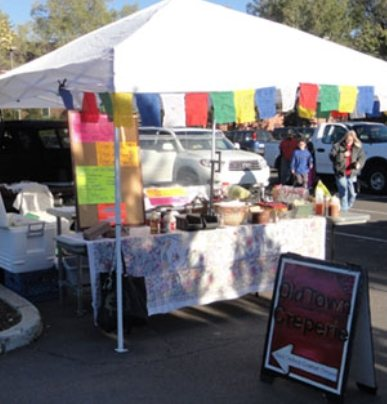

Visit
Look for us in the alley outside the Old Town Shops, between Pesto Brothers and Uptown Billiards, near Heritage Square.
Hours Seasonal
| Friday | 10 am – 7 pm |
| Saturday | 10 am – 7 pm |
| Sunday | 10 am – 3 pm |
| Monday – Thursday | Closed |
Open from the first Friday in May through Halloween. Hours shift during events on the square.
Farmers' market

Find our crepes at the downtown farmers' market on Sunday mornings from 8 am to noon, late May to early October.
Find us
Old Town Creperie
120 N Leroux St, Flagstaff, AZ 86001
(in the Old Town Shops)
Phone: (928) 774-3100
Email: eat@oldtowncreperie.com
All seating is outdoors on a covered patio. Dogs are welcome.